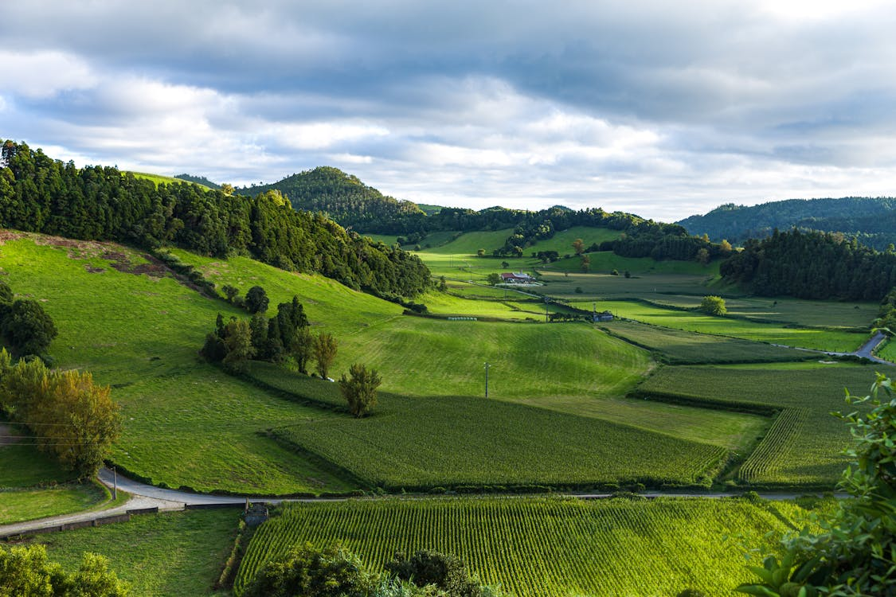
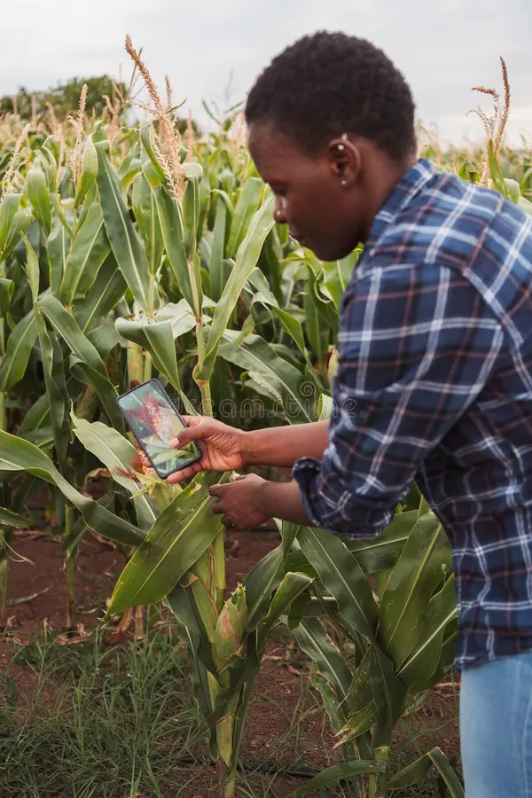
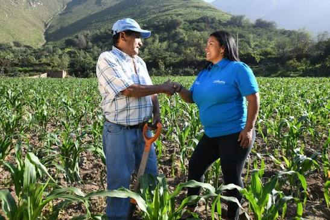
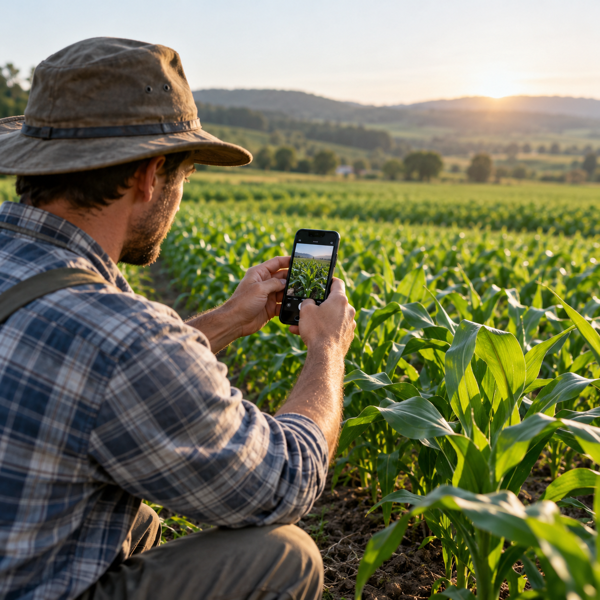
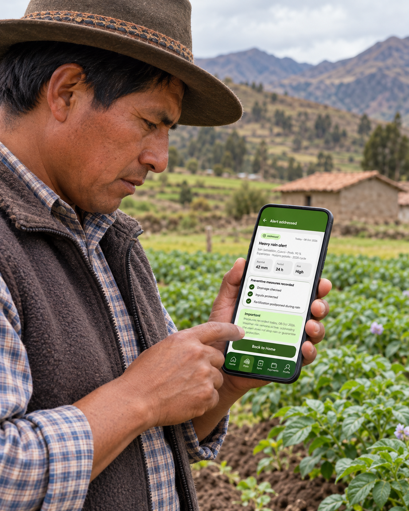
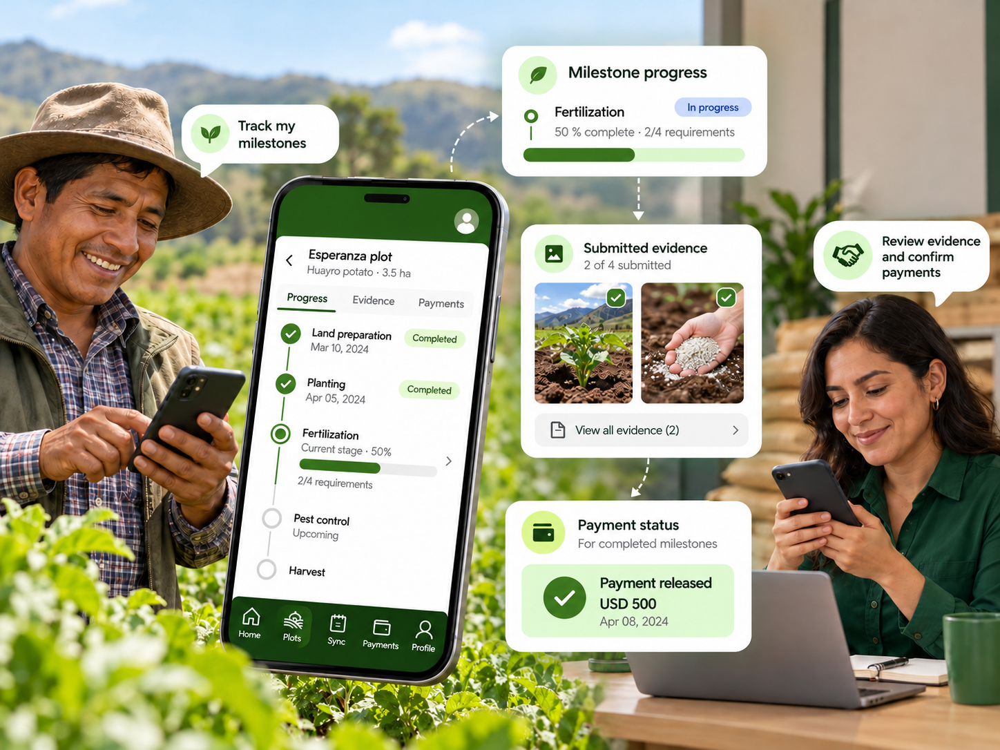
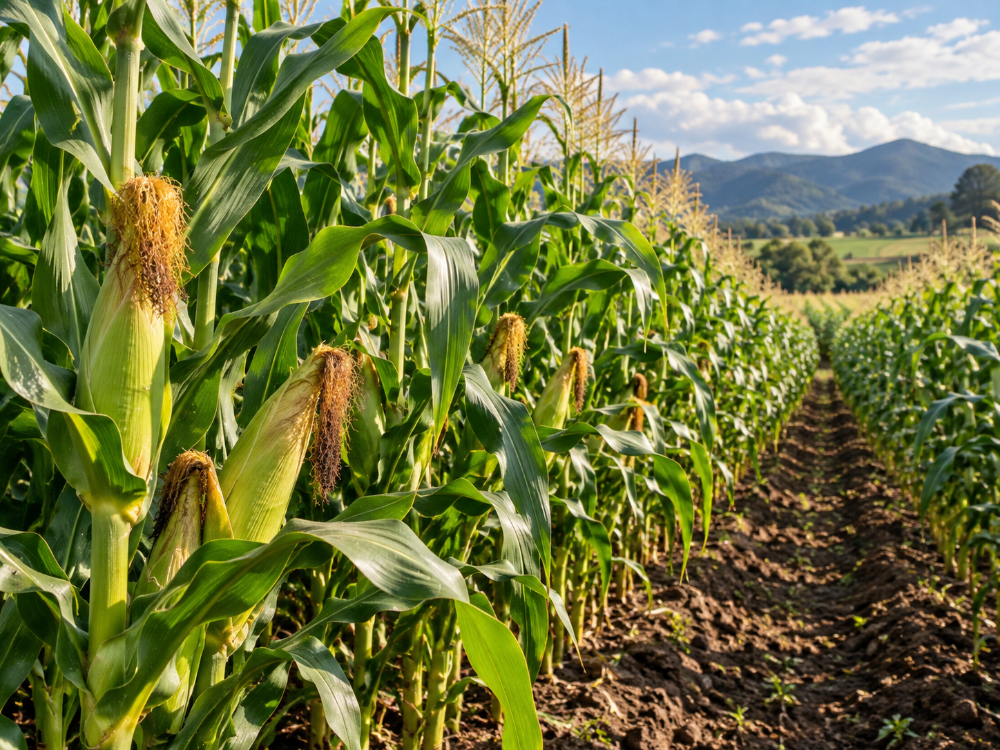
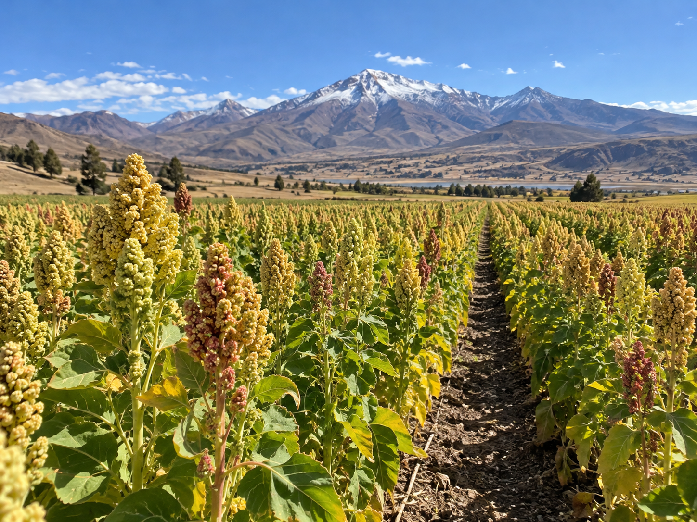
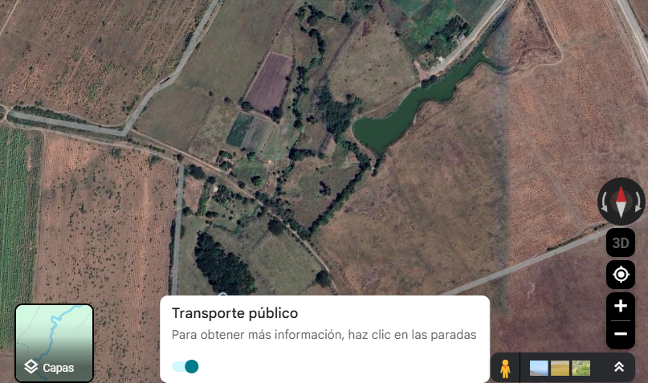

SHORT CYCLE
Huayro Potato Production
4–5 months · 4 milestones
A production plan covering planting, crop maintenance, fertilization and harvest, with evidence checkpoints for each stage.

Muyu connects farmers and merchants through milestone-based production agreements. Funds remain in Escrow and are released as field progress is verified with GPS and timestamped evidence.
See how it worksHow does it work?
Muyu connects farmers and merchants through production milestones, field evidence and escrow-based payments. Farmers document their work from the field, while merchants review progress before each milestone payment is released.
How Muyu works

CORE FEATURES
Muyu helps farmers document field work and gives merchants visibility into each production milestone, from funding to evidence review and payment release.
Funds remain held in Escrow and are released only after the corresponding milestone is reviewed and approved.
Farmers can register field evidence with photos, location, date and time to provide context about the work completed.

Evidence can be recorded with limited connectivity and synchronized when an internet connection becomes available.
Relevant weather conditions can be surfaced so farmers can react to risks that may affect production.

Farmers and merchants can follow the status of each production milestone, submitted evidence and corresponding payments.

PRODUCTION PLANS
Each production plan defines the crop cycle, expected activities, milestones and evidence required to track progress from the field.
Huayro Potato Production
A production plan covering planting, crop maintenance, fertilization and harvest, with evidence checkpoints for each stage.

SEASONAL CROPYellow Corn Production
Tracks the crop from land preparation and planting through maintenance, crop development and harvest.

ANDEAN CROPQuinoa Production
Organizes field activities and evidence checkpoints throughout the production cycle until harvest.
HOW IT WORKS
Muyu connects agricultural work, field evidence and milestone-based payments in one clear process.
The farmer registers the plot, crop and production information.
The merchant funds the agreed production plan and milestone schedule.
The farmer performs the activities defined for the current production milestone.
Field evidence is submitted and reviewed before milestone approval.
If the milestone is approved, its corresponding payment is released. Otherwise, the farmer receives a correction request.
PAYMENTS
Production funds remain secured in Escrow and are released progressively, only after the evidence for each milestone has been reviewed and approved.
Learn about paymentsThe merchant funds the production plan and the money remains protected in Escrow.
Field evidence is reviewed before approving the corresponding production milestone.
Once approved, the milestone payment is released to the farmer with a clear record for both parties.
For Farmers
Manage your plots, complete production milestones and register field evidence directly from your phone, even when connectivity is limited.
FOR MERCHANTS
Explore agricultural opportunities, follow funded plots and review field evidence before approving the payment associated with each production milestone.
FAQ's
Find answers to common questions about production plans, field evidence, milestone reviews and Escrow payments in Muyu.
Contact usMuyu connects farmers and merchants through agricultural production agreements organized by milestones. Farmers register field work and evidence, while merchants follow production progress and review each milestone.
Funds for each milestone are held in Escrow until the merchant reviews and approves the submitted field evidence for that stage.
The farmer receives a correction request with details on what needs to be updated before the milestone can be approved.
Evidence typically includes photos, GPS location, and timestamp data to document work completed in the field.
Yes. Farmers can capture and store evidence offline and sync when connectivity is available.
A production plan defines the crop cycle, milestones, activities, and evidence required throughout the growing season.
Payment is released after the merchant approves the evidence submitted for that milestone.
Muyu can surface relevant climate and weather alerts tied to registered plots and production timelines.
“We improve the interaction between the merchant and the farmer. Thanks to the app, I gained a valuable tool for working safely and reliably, with the confidence to build a long-term business relationship.”
20 years of experience
Contact
Have a question about Muyu, production plans or how the platform works? Send us a message and the AllpaTech team will get in touch with you.
Email us:
allpatech@email.com
Who can contact us?
Farmers, merchants and anyone interested in learning more about Muyu.
